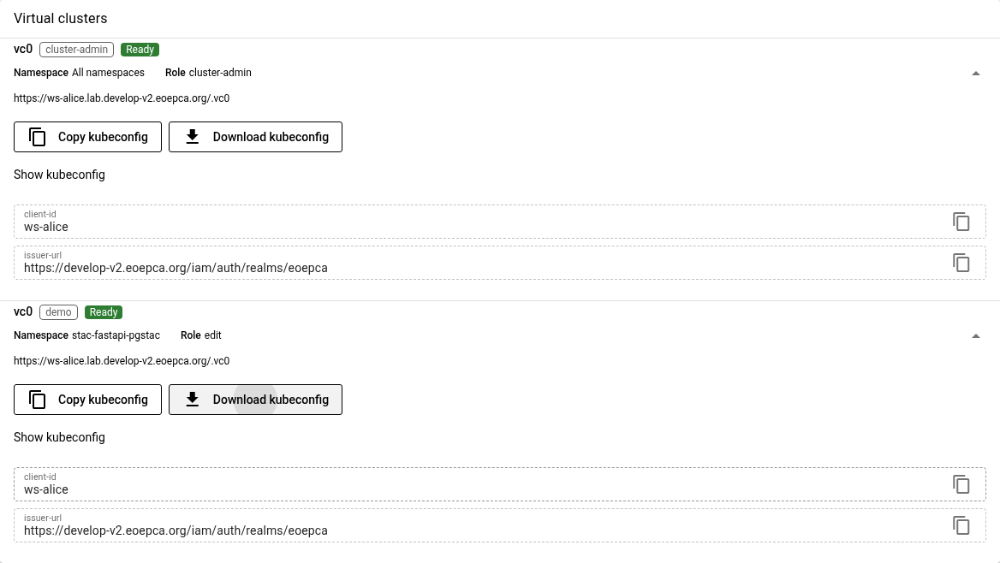
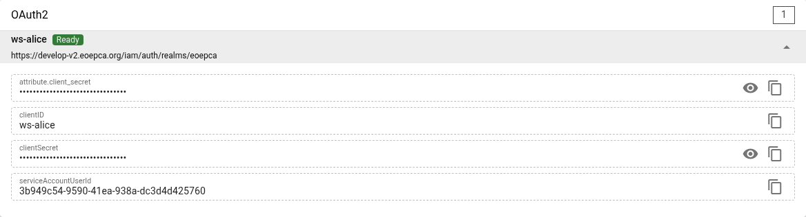
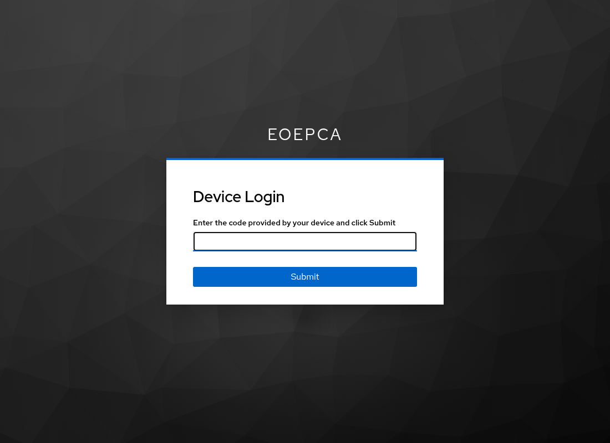
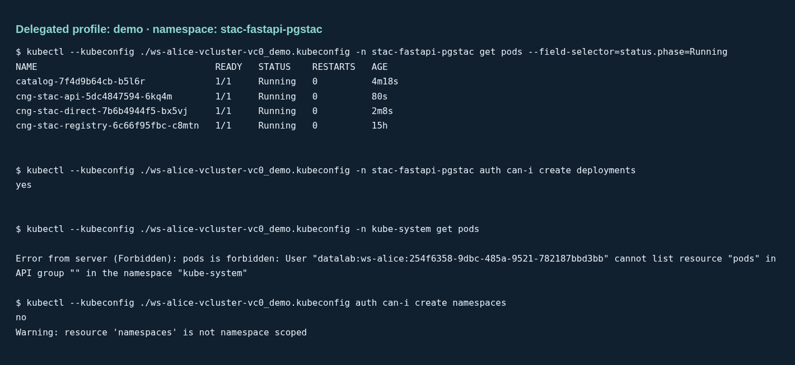

Access a workspace virtual cluster⚓︎
Use the workspace dashboard to download a kubeconfig. Use your own identity for interactive work, or give a process an exchanged token for one access profile. Downloading a kubeconfig does not grant or reduce permissions.
The Provider Datalab guide explains the generated profiles, direct operator downloads, login cache, and revocation. This guide shows the Workspace API and UI flow.
The examples use Alice’s workspace in eoepca-demo:
| Setting | Value |
|---|---|
| Dashboard | Alice’s workspace |
| Virtual cluster | vc0 |
| Administrator profile | cluster-admin, all namespaces |
| Delegation profile | demo, Kubernetes edit in stac-fastapi-pgstac |
| Delegation scope | ws-alice:vclusters_vc0_demo |
Install kubectl and Python 3. Use Bash for the shell commands. For the token
exchange script, run uv sync from this repository first.
How Workspace API supplies access⚓︎
The provider publishes ready profiles and OAuth2 client references. Workspace API checks your workspace permissions, reads the referenced connection Secrets, and supplies the permitted values to the dashboard. You do not need a host-cluster kubeconfig or Kubernetes Secret access.
The Virtual clusters card provides Download kubeconfig. The separate
OAuth2 card provides the workspace client credentials. Users with
ws_access or ws_admin can retrieve these values. A caller with only
ws_api can retrieve service connections, including ready vcluster profiles,
but cannot retrieve OAuth2 client credentials.
A download selects an API endpoint and default namespace. The access token
and Kubernetes RBAC determine what the caller can do. Provider Datalab
automatically grants workspace administrators ws_admin and the built-in
vcluster_<instance>_cluster-admin role for each configured instance.
Alice therefore already has vcluster_vc0_cluster-admin; no separate role
assignment is needed. The virtual API checks this vcluster role, while
ws_admin controls workspace management.
Case 1: Sign in as Alice⚓︎
1. Download the administrator profile⚓︎
Sign in to the dashboard as Alice. In Virtual clusters, expand the ready
vc0 entry with the cluster-admin profile. Select Download kubeconfig.
Rename the downloaded file to ws-alice-vc0.kubeconfig in your working
directory. The generated download name can include a hash.

Download a current kubeconfig to use offline login. Older downloads keep their embedded helper and login scopes until you replace them.
The profile supports device login. Alice’s issued token must contain
vcluster_vc0_cluster-admin for administrator access.
2. Supply the OAuth2 client secret locally⚓︎
In OAuth2, expand the ready ws-alice client and copy its client secret.
Use the clientSecret field.
Save only the secret value, without a JSON or YAML wrapper. This command asks
for it without displaying it or putting it in shell history:
umask 077
unset DATALAB_ACCESS_TOKEN_FILE
python3 - <<'PY'
from getpass import getpass
from pathlib import Path
directory = Path.home() / ".config/datalab"
directory.mkdir(mode=0o700, parents=True, exist_ok=True)
path = directory / "ws-alice-client-secret"
value = getpass("Workspace OAuth2 client secret: ")
if not value:
raise SystemExit("The client secret is required.")
path.touch(mode=0o600, exist_ok=True)
path.chmod(0o600)
path.write_text(value)
PY
export DATALAB_CLIENT_SECRET_FILE="$HOME/.config/datalab/ws-alice-client-secret"

The secret authenticates the OAuth client. The browser login identifies Alice and selects her user permissions. The kubeconfig contains neither a client secret nor a user token.
3. Start kubectl and approve the device login⚓︎
kubectl --kubeconfig ./ws-alice-vc0.kubeconfig get namespaces
kubectl --kubeconfig ./ws-alice-vc0.kubeconfig \
auth can-i '*' '*' --all-namespaces
On the first call, the embedded helper prints a verification URL and a user
code. Open the URL, enter the code, sign in as Alice, and approve the request.
The waiting command then continues. The authorization check must return
yes for Alice’s administrator role.

The browser login to the dashboard and this kubectl login are separate OAuth flows. An existing browser session can simplify approval, but it does not populate the kubectl token cache.
4. Reuse the cached login⚓︎
The current helper requests openid offline_access ws-alice:interactive.
It saves the access token, offline refresh token, and local login deadline in
~/.cache/datalab/oidc/<hash>.json. It uses
$XDG_CACHE_HOME/datalab/oidc when set, or DATALAB_TOKEN_CACHE_DIR for an
explicit directory. The directory has mode 0700; cache files have mode
0600. The client secret is not stored there.
| Credential or session | Lifetime |
|---|---|
| Access token | 5 minutes in the tested demo login. |
| CLI cached login | Up to 30 days after device approval. Refresh does not extend this local deadline. |
| Offline session | Subject to Keycloak’s offline idle and maximum limits and revocation. Provider Datalab sets a 30-day client idle limit. Its 30-day client maximum applies when the realm enables Offline Session Max Limited. Shorter realm limits can end access sooner. |
When kubectl runs near access-token expiry, the helper attempts renewal with
the cached offline refresh token and client secret. Successful renewal needs
no browser approval. Keep
DATALAB_CLIENT_SECRET_FILE set for refresh; set it again in a new shell.
There is no background refresh while kubectl is idle. After the local deadline
or an invalid_grant response, the helper starts device login again. Other
renewal errors stop the command. The provider guide describes how to
start a fresh device login.
Ordinary browser logout does not revoke offline access. Revoke the workspace client’s offline access in Keycloak to stop further refresh. An already issued access token can remain usable until its expiry. See the provider’s human login lifetime and Keycloak offline access for the session settings and revocation controls.
The notebooks use a separate public-client login and keep tokens in kernel
memory. Passing one of those tokens through DATALAB_ACCESS_TOKEN_FILE does
not use this offline cache. See notebook logins.
If your user has only an additional namespace role, the administrator profile can still perform device login. Request the matching optional scope as shown under human access. The resulting token grants that namespace role. It does not grant cluster administration.
Case 2: Delegate the demo profile to a process⚓︎
Alice remains the human identity in the exchanged token. The process gets
the demo kubeconfig and the exchanged access token. Alice keeps her original
login and any client credentials.
1. Download the demo profile⚓︎
In Alice’s dashboard, expand Virtual clusters > vc0 > demo and select
Download kubeconfig. Save it as ws-alice-vcluster-vc0_demo.kubeconfig.
Check that the displayed namespace is stac-fastapi-pgstac and the role is
edit.
The profile uses --token-only. It cannot start device login or refresh a
token. Giving it Alice’s unrestricted token would retain her wider access.
2. Exchange Alice’s user token⚓︎
Run this script from the repository root. It uses the same public client and device login as the notebooks. Approve the login as Alice. This approval is for the delegator; the recipient will have no login prompt.
umask 077
uv run python - <<'PY'
from pathlib import Path
import sys
sys.path.insert(0, "docs")
from notebook_support import ApiSession, load_config, workspace_login
config = load_config("eoepca-demo.env", "workspace")
tokens = workspace_login(config, "alice")
with ApiSession() as api:
response = api.get(
config["WORKSPACE_API_ENDPOINT"] + "/ws-alice/token",
headers={"Authorization": "Bearer " + tokens["access_token"]},
params={"scope": "ws-alice:vclusters_vc0_demo"},
)
response.raise_for_status()
delegated = response.json()
path = Path("ws-alice-vc0-demo.token")
path.touch(mode=0o600, exist_ok=True)
path.chmod(0o600)
path.write_text(delegated["access_token"])
print(f"Saved {path}; expires in {delegated['expires_in']} seconds.")
PY
Workspace API performs token exchange with its stored workspace client
credentials. It checks the returned signature, issuer, subject, audiences,
scopes, and roles before returning the token. Alice needs token-issuance
permission, ws_api, and vcluster_vc0_demo. The resulting workspace roles
are ws_api and vcluster_vc0_demo; administrator roles are absent.
The scope query is required. A call to /ws-alice/token without it requests
a service-account token with only ws_api, which cannot access the virtual
cluster. See the Workspace token API.
3. Give the files to the process and run kubectl⚓︎
Transfer the kubeconfig and token file through a private channel. On the recipient’s machine, in the directory with both files:
unset DATALAB_CLIENT_SECRET_FILE
export DATALAB_ACCESS_TOKEN_FILE="$PWD/ws-alice-vc0-demo.token"
chmod 600 "$DATALAB_ACCESS_TOKEN_FILE"
kubectl --kubeconfig ./ws-alice-vcluster-vc0_demo.kubeconfig \
-n stac-fastapi-pgstac get pods --field-selector=status.phase=Running
kubectl --kubeconfig ./ws-alice-vcluster-vc0_demo.kubeconfig \
-n stac-fastapi-pgstac auth can-i create deployments
The first call lists running Pods without a login prompt. The authorization check
returns yes. DATALAB_ACCESS_TOKEN_FILE is the path to a file that contains
only the JWT, without Bearer or a JSON wrapper. It is not the token value.
4. Check that other namespaces are denied⚓︎
kubectl --kubeconfig ./ws-alice-vcluster-vc0_demo.kubeconfig \
-n kube-system get pods
kubectl --kubeconfig ./ws-alice-vcluster-vc0_demo.kubeconfig \
auth can-i create namespaces
The Pod request must fail with Forbidden. The second check returns no
and a nonzero exit status. The token permits edit operations only in
stac-fastapi-pgstac, unless that identity has another applicable Kubernetes
binding. Its ws_api role also permits service credential reads through
Workspace API; the namespace restriction applies to Kubernetes access.
These checks passed on eoepca-demo on 2026-11-07. This image shows the
recorded command output from that run:

5. Replace the token when it expires⚓︎
The token’s exp claim sets its expiry. The script reports the issuer’s
expires_in; it does not promise a fixed duration. The recipient has no
refresh token, uses no device-login cache, and must obtain a new exchange
result from Alice or the issuing service after expiry.
The virtual API validates JWTs locally. Keycloak logout, removal of Alice’s
role, revocation of offline access, client-secret rotation, or deletion of a
token file does not reliably invalidate copies of an issued token before
exp. There is no individual
JWT revocation list in this setup. An operator can remove the profile or its
RBAC binding to deny access sooner, after reconciliation. This affects every
caller that needs that profile or binding. See
lifetime and revocation.